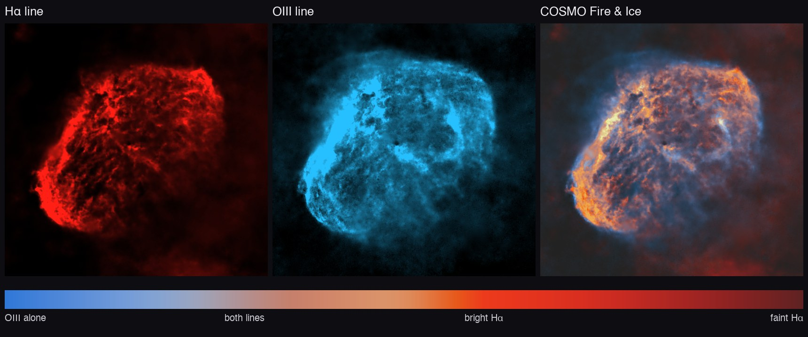

Changelog
Changelog
What changes from one version of COSMO to the next.
0.4.0
- COSMO Fire & Ice, the new default of Narrowband palette: OIII blue, Hα red, then orange and yellow as it brightens. Fitted on a hand-processed Draco stack (colour gap 0.029 over the whole image); where both lines are bright, OIII counts less, so no flat white (NGC 6888: 2.1 % of the crescent near white before, under 0.1 % now). Only three palettes remain: COSMO Fire & Ice, HOO, SHO, on bigger thumbnails.
- Protect the sky (Narrowband palette): takes the faint OIII out of the background, so raising OIII no longer turns the sky into blue patches.
- Star colours, first step of Stars after a separation: gives the stars of a dual-band stack their natural colours back, from the Gaia catalogue when the file says where the telescope pointed (651 stars matched on NGC 7000), with a Saturation slider.
- COSMOStars v47 replaces v44: on the same NGC 6960 test stack, 129 star remnants per megapixel instead of 418, and fewer stars left on bright nebula; the small spike left at the centre of a removed star is cleaned.
- Calibration in the Stack window: bias, darks, flats and dark flats, found in the folder or chosen by hand; a single file is used as a ready master. Subs calibrated in the camera (Seestar) need none.
- Full screen (F, Esc to leave) at any step; a slow preview now shows its progress.
- Fixed: a star core sharpened by COSMOSharp above 1 made NoiseXTerminator divide the whole image, and the sky went black at the stretch.


0.3.3
- COSMOStars v44 replaces v36: on an NGC 6960 test stack sharpened and denoised before the separation, 418 star remnants per megapixel instead of 2100. The colour under bright stars is matched, so no grey patch shows after a palette.
- Run up to <step>, at the bottom of the steps panel: applies, in order, the steps still to do before the selected one.
- Update check: COSMO says when a newer version is published (at most once a day, can be turned off in Help).
- Windows: install per user without administrator rights, a portable .zip, and a new version installs over the previous one.
- Fixed: a Nebula or Stars step added after Recombine did not reach the final image; tooltips showed as empty white rectangles.
0.3.0
- COSMO: the application no longer carries the name “Darkroom”.
- COSMOSharp, COSMODenoise, COSMOStars: the three in-house networks have a name and are marked Experimental, not recommended for finished images yet. The RC-Astro engines remain available from your own installation.
- Narrowband palette: two gradient palettes, Red, yellow and blue (the new default) and Red, gold and blue.
0.2.0
- Narrowband palette: false colours for dual-band stacks (SHO, HOO, Foraxx…), chosen on a contact sheet of the image.
- Soft star cores: the hard edge of a bright star melts into its halo.
0.1.0
- First version with installers for macOS and Windows: Stack (standard, automatic HDR, comet) and the processing tools of the linear and stretched image.